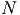
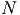
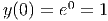
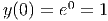

O método de Adams-Bashforth consiste de um esquema recursivo do tipo:
Exemplo 9.6.1. Adams-Bashforth de segunda ordem
![(n+1) (n) h-[ ( (n) (n)) ( (n−1) (n−1))]
y = y + 2 3f y ,t − f y ,t](main4425x.png)
E 9.7.1. O valor exato da integral imprópria  é dado por
é dado por

 ,
,
 e
e  . Como você avalia a qualidade do resultado obtido? Por
que isso acontece.
. Como você avalia a qualidade do resultado obtido? Por
que isso acontece.
Resposta. -0.2310491, -0.2452073, - 0.2478649.

E 9.7.2. O valor exato da integral imprópria  é dado por
é dado por  .
Escreva esta integral como
.
Escreva esta integral como

 ,
,
 e
e  .
.
E 9.7.3. Estamos interessados em avaliar numericamente a seguinte integral:

 .
.
 ,
, ,
,
 ,
,  ,
,  e
e  .
.
![∫ 1 ∫ 1 ∫ 1
ln (x )sin(x)dx = ln(x)xdx + ln(x )[sin(x) − x]dx
0 (0 2 2) 0|1 ∫
x-- x-- || 1
= 2 ln x − 4 || + 0 ln(x) [sin(x) − x]dx
∫ 1 0
= − 1-+ ln(x)[sin (x) − x]dx
4 0](main4046x.png)
![∫1ln(x) [sin(x) − x]dx
0](main4047x.png) numericamente via
Gauss-Legendre com
numericamente via
Gauss-Legendre com  ,
,  , ,
, ,  ,
,  e
e
 .
.
Exemplo 9.6.3. Adams-Bashforth de quarta ordem
  e e  representam as inclinações nos extremos e representam as inclinações nos extremos e  e e  são duas
aproximações diferentes para a inclinação no meio do intervalo.
=======
src="main4422x.png" alt=" (n+1) (n) h [ ( (n) (n)) ( (n−1) (n− 1))
y = y + 24-55f y ,t − 59f y ,t
( (n−2) (n−2)) ( (n− 3) (n−3))]
+ 37f y ,t − 9f y ,t
=======
src="main4427x.png" alt=" (n+1) (n) h [ ( (n) (n)) ( (n-1) (n- 1))
y = y + 24-55f y ,t - 59f y ,t
( (n-2) (n-2)) ( (n- 3) (n-3))]
+ 37f y ,t - 9f y ,t
>>>>>>> 2f43bff4df7198ad5fd8ebe602c2f00c0d1ecf01
=======
src="main4427x.png" alt=" (n+1) (n) h [ ( (n) (n)) ( (n−1) (n− 1))
y = y + 24-55f y ,t − 59f y ,t
( (n−2) (n−2)) ( (n− 3) (n−3))]
+ 37f y ,t − 9f y ,t
>>>>>>> a89bb6fd5bd3faff679a502c98ff65257591aa83
" class="math-display" > são duas
aproximações diferentes para a inclinação no meio do intervalo.
=======
src="main4422x.png" alt=" (n+1) (n) h [ ( (n) (n)) ( (n−1) (n− 1))
y = y + 24-55f y ,t − 59f y ,t
( (n−2) (n−2)) ( (n− 3) (n−3))]
+ 37f y ,t − 9f y ,t
=======
src="main4427x.png" alt=" (n+1) (n) h [ ( (n) (n)) ( (n-1) (n- 1))
y = y + 24-55f y ,t - 59f y ,t
( (n-2) (n-2)) ( (n- 3) (n-3))]
+ 37f y ,t - 9f y ,t
>>>>>>> 2f43bff4df7198ad5fd8ebe602c2f00c0d1ecf01
=======
src="main4427x.png" alt=" (n+1) (n) h [ ( (n) (n)) ( (n−1) (n− 1))
y = y + 24-55f y ,t − 59f y ,t
( (n−2) (n−2)) ( (n− 3) (n−3))]
+ 37f y ,t − 9f y ,t
>>>>>>> a89bb6fd5bd3faff679a502c98ff65257591aa83
" class="math-display" > |
Os métodos de passo múltiplo evitam os múltiplos estágios do métodos de Runge-Kutta, mas exigem ser "iniciados"com suas condições iniciais. >>>>>>> 8ffe51d4bbc8f1e500cc9c435f05cb1c6f0ffef3
Resposta. a)-0.2472261, -0.2416451, -0.2404596, -0.2400968, -0.2399563, -0.2398928. b)-0.2393727, -0.2397994,
-0.2398104, -0.2398115, -0.2398117, -0.2398117.
E 9.7.4. Considere o problema de calcular numericamente a integral
Resposta.
Solução do item e: Como
E 9.7.7. Use a técnica de integração por partes para obter a seguinte
identidade envolvendo integrais impróprias:
Resposta. 4.1138
E 9.7.9 (title=Ciência dos materiais). O calor específico (molar) de um
sólido pode ser aproximado pela teoria de Debye usando a seguinte expressão
Resposta. a)19.2, 22.1, 23.3 b)513.67K
E 9.7.10. Explique por quê quando um método simples tem estimativa de
erro de truncamento local de ordem
E 9.7.11. Encontre os pesos Use esse método para avaliar o valor da integral das seguintes integrais e
compare com os valores obtidos para Simpson e trapézio, bom como com o valor
exato.
Resposta.
E 9.7.12. Encontre os pesos
Resposta. >>>>>> 2ce5bba22e77a9b0d17e57fb0d2efc8029204145
id="tailmainse43.html">

 quando
quando  .
.
 ,
,
 ,
,  e
e  .
e aplicando quadratura gaussiana com
.
e aplicando quadratura gaussiana com 
 ,
,  ,
,  e
e
 .
e aplicando quadratura gaussiana com
.
e aplicando quadratura gaussiana com 
 ,
,  ,  e
,  e
 .
.
 em série de Taylor, truncando a série
depois do
em série de Taylor, truncando a série
depois do  -ésimo termos não nulo e integrando analiticamente.
-ésimo termos não nulo e integrando analiticamente.
 pelo polinômio de Taylor de grau 4 dado
por
pelo polinômio de Taylor de grau 4 dado
por


n b c d e f 
2.205508 3.5733599 3.6191866 


2.5973554 3.6107456 3.6181465 


2.7732372 3.6153069 3.6181044 


2.880694 3.6166953 3.6180989 


 Solução do item f)
Solução do item f) 


 é a constante de Avogrado dado por
é a constante de Avogrado dado por  e
e  é a
constante de Boltzmann dada por
é a
constante de Boltzmann dada por  .
.  é temperatura de
Debye do sólido.
é temperatura de
Debye do sólido.
 ,
,  e
e  supondo
supondo  .
.
 é
é  . Dica: aproxime a integral por
um esquema numérico com um número fixo de pontos.
. Dica: aproxime a integral por
um esquema numérico com um número fixo de pontos.

 quando
quando 

 , então o método composto associado
tem estimativa de erro de ordem
, então o método composto associado
tem estimativa de erro de ordem  .
.
 e
e  e as abcissas
e as abcissas  e
e  tais que
tais que

 , isto é o método que apresente máxima
ordem de exatidão possível com dois pontos.
, isto é o método que apresente máxima
ordem de exatidão possível com dois pontos.


 ,
,  e
e  tal que o método de integração
tal que o método de integração

 e
e  com ordem 3.
com ordem 3.

![(n+1) (n) h [ ( (n) (n)) ( (n−1) (n− 1)) ( (n−2) (n−2)) ]
y = y + ---23f y ,t − 16f y ,t + 5f y ,t
12](main4426x.png)
 .
.


 e
e  usando
procedimentos analíticos e numéricos.
usando
procedimentos analíticos e numéricos.